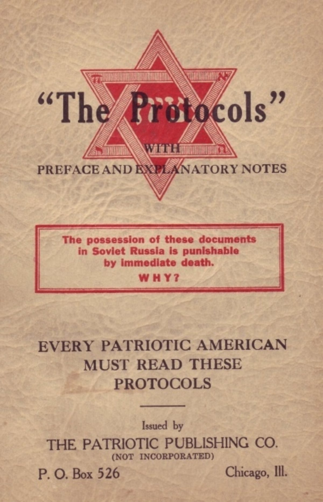

So viele unterschiedliche Möglichkeiten eine Geschichte zu erzählen.
Instrumentalisierung der Vergangenheit
Quellen stammen aus der Vergangenheit, Darstellungen erzählen auf Grundlage dieser Quellen Geschichte.
Diese Geschichten werden von Menschen erzählt. Was erzählt wird und wie es erzählt wird, hängt stark von den Sichtweisen und Absichten dieser erzählenden Menschen ab. Damit ist klar: Es können sehr unterschiedliche Erzählungen über das gleiche Ereignis der Vergangenheit entstehen. Verunsichert dich das? Ich hoffen nicht, denn mit dieser Erkenntnis kann man viel über Vergangenheit, die Gegenwart und sogar die Zukunft lernen.
1.1 Wiederholung: Vergangenheit und Geschichte, Quellen und Darstellungen
Test
Wir starten zunächst mit einer kleinen Wiederholung. Die Unterscheidung zwischen Vergangenheit und Geschichte und von Quellen und Darstellungen. Falls dir das alles noch völlig klar ist, kannst du direkt mit Kapitel 1.2 weiter machen.
Wiederholung
Vergangenheit und Geschichte
Menschen erzählen sich Geschichten über die Vergangenheit. Sie tun das mit unterschiedlichen Absichten, Hintergründen, Wissenständen und in unterschiedlichen Medien, z.B. in Liedern.§
Geschichten über die Vergangenheit stellen niemals genau das vergangene Geschehen dar. Sie nähren sich dieser Vergangenheit an. Jeder kann solche Geschichten erzählen. Und viele tun das auch. Dabei muss man auf Folgendes achten:
die Quellen, mit deren Informationen Geschichte erzählt wird
Sie sind geprägt von der Entstehungszeit, der Entstehungssituation und der Absicht der Autoren. (Perspektivität)
die sonstigen Informationen, die der Erzähler über die Vergangenheit hat
- Benutzt er tatsächlich alle Quellen, die das vergangene Ereignis beschreiben?
- Sind entscheidende Informationen verloren gegangen?
- Sind alle Sichtweisen auf das Ereignis überliefert?
- Entsprechen die Informationen in den verwendeten Quellen tatsächlich der Wahrheit? (Partialität)
die Zeit, in der der Erzähler der Geschichte lebt und aus der er zurückblickt in die Vergangenheit
- Es prägt den Erzähler, dass er immer 'nur' aus seiner eigenen Zeit zurückschauen kann. Die Einstellungen und Ideen seiner Zeit prägen ihn nämlich. Er kann nicht mit dem Kopf eines Königs oder Bauern aus dem Mittelalter denen.
- Er weiß auch, wie die danach Geschichte weiterging. Er hat Wissen, das die Menschen der Vergangenheit nicht hatten. Dieses Wissen und seine Prägungen überträgt er bewusst oder unbewusst auf die Vergangenheit und damit auch in seine Geschichte. (Partialität)
Der Erzähler stellt Fragen an die Vergangenheit aus, die ihm in seiner Gegenwart wichtig erscheinen
Damit lässt er bewusst oder unbewusst Informationen weg, die nicht zu seiner Fragestellung passen. (Selektivität)
Die Grafik zeigt weitere Faktoren, die eine Erzählung über ein vergangenes Ereignis beeinflussen. Hättest du noch andere Faktoren mit aufgenommen?
Noch nicht ganz klar, wie das mit Vergangenheit und Geschichte zusammenhängt? Vielleicht helfen dir diese Bilder weiter ...§
Der Blick zurück in die Vergangenheit ist wie der Strahl einer Taschenlampe in die Unendlichkeit. Nur ein sehr kleiner Teil des Gesamten kann beleuchtet und damit erkannt werden.§
Vertiefung: Der Historiker Yuval Harari über die Rolle von Geschichten
Wie schaffte [der Mensch] es, Städte mit Zehntausenden Einwohnern und Riesenreiche mit Millionen von Untertanen zu gründen? Sein Erfolgsgeheimnis war die fiktive Sprache. Eine große Zahl von wildfremden Menschen kann effektiv zusammenarbeiten, wenn alle an gemeinsame Mythen glauben. Jede großangelegte menschliche Unternehmung – angefangen von einem archaischen Stamm über eine antike Stadt bis zu einer mittelalterlichen Kirche oder einem modernen Staat – ist fest in gemeinsamen Geschichten verwurzelt, die nur in den Köpfen der Menschen existieren. Glaubensgemeinschaften basieren auf diesen kollektiven Mythen.
Zwei Katholiken, die einander nie zuvor begegnet sind, verstehen einander ohne lange Erklärungen, weil beide glauben, dass es einen Gott gibt, der seinen Sohn auf die Erde geschickt hat, und dass dieser sich kreuzigen ließ, um die Menschheit von ihren Sünden zu erlösen. [...] Konzerne basieren auf gemeinsamen wirtschaftlichen Mythen: Zwei Mitarbeiter von Google, die einander noch nie gesehen haben, können um den halben Erdball hinweg zusammenarbeiten, weil sie an die Existenz von Google, Aktien und Dollars glauben. Rechtsstaaten fußen auf gemeinsamen juristischen Mythen: Zwei wildfremde Anwälte können effektiv kooperieren, weil sie an die Existenz von Recht, Gesetz und Menschenrechten glauben. Diese Dinge existieren jedoch nur in den Geschichten, die wir Menschen erfinden und einander erzählen. Götter, Nationen, Geld, Menschenrechte und Gesetze gibt es gar nicht – sie existieren nur in unserer kollektiven Vorstellungswelt. Dass »primitive Stämme« ihre Gesellschaft zusammenhalten, indem sie an Geister glauben und bei Vollmond um ein Feuer herumtanzen, verstehen wir sofort. Dabei übersehen wir gern, dass die fortschrittlichen Institutionen unserer modernen Gesellschaft keinen Deut anders funktionieren.
Darstellung 2
Vertiefung: Der Historiker Yuval Harari in einem TED-Videovortrag über die Rolle von Geschichten (Original mit Untertiteln)
In den Eistellungen kannst du dir englische oder deutsche Untertitel einblenden lassen§

Die Protokolle der Weisen von Zion sind eine gefälschte Quelle. Obwohl inzwischen schon lange bewiesen ist, dass sie eine Fälschung sind, dienen sie bis heute antisemitischen Verschwörungsgläubigen als Grundlage. In den Protokollen werden angebliche Treffen jüdischer Weltverschwörer dargestellt.§
Quellen sind alles, was aus der Vergangenheit überliefert wurde: Urkunden, Briefe, Zeitungen, Bilder, ja sogar Kleider, Haushaltsgegegenstände und Gebäude. Aber was wissen wir über die Vergangenheit, wenn wir einen Brief aus dem 18., Jahrhundert in der Hand halten oder einen alten Wasserkrug? Genau: Zunächst recht wenig. Daher müssen wir die Quellen befragen, sie untersuchen. Wir müssen Methoden anwenden, um herauszubekommen, was Quellen uns berichten können. Man unterscheidet bei der Quellenanalyse die äußere und die innere Analyse:
Äußere Quellenanalyse: Hier fragst du nach allem, was das Äußere der Quelle ausmacht, bis hin zur Art des Papiers und dem Ort, wo die Quelle gefunden oder gelagert wurde.
Innere Quellenanalyse: Hier fragst du nach dem Inhalt der Quelle, also danach, welche Informationen, Argumente und Meinungen die Quelle enthält.
1.2 Wie Darstellungen von ihrer Entstehungszeit abhängen: die sogenannte Dolchstoßlegende
Wahlplakat der Deutschnationalen Volkspartei aus dem Jahr 1924§
Die Dolchstoßlegende war eine von der deutschen Armeeführung am Ende des Ersten Weltkrieges erfundene Verschwörungserzählung, die den (sozial)demokratische Politikern und dem „bolschewistischen Judentum“ die Schuld an der Niederlage gab. Laut Armeeführung waren die Truppen „im Felde unbesiegt“ geblieben und hatten erst durch oppositionelle Zivilisten aus der Heimat einen „Dolchstoß von hinten“ erhalten. Diese Erzählung wurde zudem häufig mit dem „internationalen Judentum“ verbunden.
In diesem Video findest du die historischen Hintergründe um die Dolchstoßlegende. Ab 12:13 wird konkret auf diese Verschwörungserzählung eingegangen.§
Nachdem du dich mit den Inhalten und dem Hintergrund der Dolchstoßlegende beschäftigt hast, kannst du dir jetzt ansehen, wie sie dargestellt und damit im Verlauf der Zeit interpretiert wurde. Im Folgenden findest du vier Ausschnitte aus Schulbüchern. Gleiches Ereignis, unterschiedliche Erzählzeiten. Spannend, oder?
Version von 1929
Otto Schnitzer, Deutsche Geschichte fürs deutsche Volk (1929)
Und nun ging’s zum Abschluss des Waffenstilstands, den die deutschen Unterhändler im Walde von Compiègne mit Marschall Foch abschlossen. Während sie unterwegs waren, brach in Deutschland die Revolution aus. So standen sie vollends wehrlos dem Feinde gegenüber; dieser konnte seine Forderungen so hoch schrauben als er wollte. Sie waren auch barbarisch hart.
Otto Schnitzer, Deutsche Geschichte fürs deutsche Volk. Stuttgart 1929, S. 463.
Version von 1943
Geschichtsbuch für die deutsche Jugend (1943)
Am 7. November [1918] wird in München, am 9. in Berlin die Republik ausgerufen. Ohne auch nur Widerstand zu versuchen, treten die deutschen Fürsten ab. Der oberste Kriegsherr, der letzte Kaiser aus dem großen Geschlecht der Hohenzollern, verlässt flüchtend die Soldaten. An seine Stelle treten Marxisten. Sie lassen den Umsturz weiter um sich greifen. Munition und Verpflegung kommen nicht mehr an die Front. Nun erst muss sich Hindenburg den wahnwitzigen Bedingungen des Waffenstillstandes fügen. [...] Das deutsche Volk ist wehrlos! Jetzt können Haß und Vernichtungswille mit uns machen, was sie wollen.
B. Kumsteller/U. Haacke/B. Schneider, Geschichtsbuch für die deutsche Jugend. Volksschulausgabe, Klasse 6-8, Leipzig 1943, S. 198f.
Version von 1984
Geschichtslehrbuch für die 9. Klasse (DDR, 1984)
Das deutsche Heer war erschöpft, kriegsmüde und begann sich zu zersetzen. Am 29. September [1918] musste die Oberste Heeresleitung erklären, dass der Krieg verloren sei und die verzweifelte Lage des Heeres sofortigen Waffenstillstand erfordere. Damit endete nach mehr als vierjährigem Völkermorden der Versuch des deutschen Imperialismus, Europa zu beherrschen und die Welt zu seinen Gunsten neu aufzuteilen, mit einer militärischen Niederlage.
Wolfgang Bleyer u.a., Geschichte. Lehrbuch für die Klasse 9, Berlin 1984, S. 42.
Version von 1996
Geschichte und Geschehen (Geschichtslehrbuch für die Sekundarstufe I, 1996)
Seit dem Sommer 1918 änderte sich die militärische Lage. Die deutschen Truppen mussten vor den Alliierten immer weiter zurückweichen. Die Verbündeten Österreich-Ungarn, Bulgarien und die Türkei standen ebenfalls am Rande des Zusammenbruchs. Die Oberste Heeresleitung forderte daher Ende September den baldigen Abschluss eines Waffenstillstands. Dieser sollte zu einem für das Deutsche Reich maßvollen Frieden führen.
Ludwig Bernlocher u.a., Geschichte und Geschehen. D4, Geschichtliches Unterrichtswerk für die Sekundarstufe I, Leipzig/Stuttgart/Düsseldorf 1996, S. 779.
Aufgabe 2
Trage die historischen Hintergründe zur sogenannten „Dolchstoßlegende" zusammen.
Beschreibe die Absichten, die du hinter den vier Schulbuchtexten oben vermutest. Beachte dabei die Zeit, in der sie entstanden sind. Stelle deine Erarbeitungen übersichtlich in einer Tabelle dar.
Stelle ein aktuelles Thema dar, das du für ähnlich kontrovers hältst wie die „Dolchstoßlegende".
Wie aus Vergangenheit Geschichte erzählt wird
Um zu verstehen, wie Geschichten wirken können, musst du verstehen, mit welchen Mitteln sie erzählt werden. Die erzählerischen Mittel sind dabei stark abhängig vom Medium, mit dem sie erzählt werden: Text, Film, Fotografie ...
In diesem Kapitel erkunden wir die erzählerischen Mittel am Beispiel des Films. Viele hier gewonnene Erkenntnisse kannst du auf andere Erzählformen übertragen.
Szene 1Szene 2Szene 3
Aufgabe 3
Sieh dir die zwei Kurzgeschichten in jeweils drei Filmbildern (Szene 1 – Szene 3) an. Sie sind einerseits sehr ähnlich, anderseits sehr unterschiedlich.
Arbeite die Gründe für die unterschiedlichen Wirkungen heraus.
Achte dabei auf die Kleidung, die Farbgebung, das Licht, die Position der Kamera und die Ausstattung.
EinstellungsgrösseTon und MusikAusschnitt aus „Nosferatu – Eine Symphonie des Grauens" (1922). Einmal mit Originalmusik, einmal mit veränderter Tonspur.§
Zum Üben ideal: erzählerische Mittel im Propaganda-Film
Darstellung 3
Hintergründe zum Film „Ernst Thälmann – Führer seiner Klasse" (DDR, 1955)
Zur Person Der Film 'Ernst Thälmann – Führer seiner Klasse' ist ein Film aus der DDR und wurde im Jahr 1955 produziert. Er gilt als einer der wichtigsten Propagandafilme der DDR. Ernst Thälmann (1886-1944) wurde in Hamburg geboren und 1944 im Konzentrationslager Buchenwald ermordet. Er war einer der bekanntesten Führer der Kommunisten in Deutschland. Von 1924 bis 1933 war er Mitglied des Reichstages sowie von 1925 bis 1933 Vorsitzender der Kommunistischen Partei Deutschlands (KPD). Er wurde 1933 verhaftet nach elf Jahren Isolationshaft auf Befehl Adolf Hitlers erschossen.
Handlung des Films Durch die 1929 beginnende Weltwirtschaftskrise kommt es bei den Arbeitern zu drastischen Lohnkürzungen. Ernst Thälmann führt daher mehrere Streiks an. Er verliert die Reichspräsidentenwahlen im Jahr 1932, setzt seinen Kampf für die Rechte der Arbeiter und gegen den Faschismus auch nach dem Machtabtritts Hitlers fort. Aus diesem Grund wird er verhaftet und erträgt elf Jahre Isolationshaft aufrecht und heldenhaft. 1944 wird er hingerichtet.
Der Ausschnitt oben zeigt das Ende des Films: Thälmanns Gang zur Hinrichtung.
Aufgabe 4
Untersuchung filmischer Mittel bei einem Film
Nenne die drei für dich wichtigsten filmischen Mittel in diesem Ausschnitt. Begründe deine Auswahl.
Arbeite die beabsichtigte Wirkung dieser Mittel heraus. Nutze dafür auch die Informationen aus der Darstellung 3.
Diskutiere in deiner Lerngruppe, ob derartige Mittel auch in aktuellen Filmproduktionen verwendet werden.